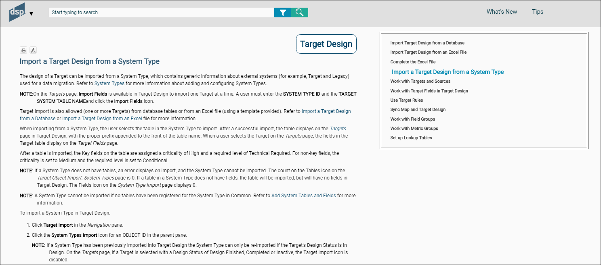

When applying a style in Flare, it may be necessary to clear a style or remove attributes from a style so that text is formatted correctly. Clear the style by highlighting the text (click the style block in the XML Editor), and then on the Home tab, in the Font group, click the Unformat icon.
h1
All topics start with an h1 style.
h2
Format the title of sections in topics in h2.
h3
Use h3 when sub sections within a topic need a heading.
p
Use the p (paragraph) style for text that is not in a table, is not bulleted or numbered, and is not a note.
Use bullets to present a list of information.
Use the Bullets option in Flare for bulleted lists.
Bulleted lists must include at least two items and have a parallel structure. Refer to List Boxes in Use Cases for more information.
Use numbered steps when describing a detailed, sequential process. Refer to Use of Numbered Steps in Use Cases for more information.
Use the Table Column style for the first row and the left column in all tables. Use Table Text for all other columns.
Apply the fielddescripion stylesheet to field description tables to set column width and grid lines.
Refer to Format Tables in the Syniti Documentation Process document for more information.
Use the Table Note style for adding notes to tables.
Use the p.note style for notes included in paragraphs.
To add a note in numbered steps, make the note a paragraph item (CTRL+;). Apply a p.note style. Refer to Use of Numbered Steps in Use Cases for more information.
Bold the colon after the word NOTE:
Italics
In use cases, use italics for:
Bold
Use bold for:
NOTE: Do not bold the names of UI elements (icons, etc.) outside of steps except when you are making an imperative statement (whether inside or outside of a step). An imperative statement is Click the XXX icon. Select Xxxx from the listbox).
In use case steps, include a link to a page description after the Click Add or Click Edit step. Italicize the reference and do not use a period. For example:
View the field descriptions for the Targets page
Add a hyperlink to this text that is linked to the Page descriptions page.
Use the following standard text:
Refer to [Use case name] for more information.
Add references as relevant to avoid repeating content and to ensure consistency in information.
A simple use case can be described in one topic.
The heading text is the name of the use case topic. The name begins with a verb, for example, Add a Template to a Process.
The use case answers the following questions:
A use case defines any unfamiliar terms as needed. If these terms are used throughout help, add a glossary entry for them.
Write the steps with the assumption that the user is already working in ADM.
Use this format for the line above the steps:
To [perform an action] in Map:
Do not include the component name in the Navigation steps, e.g., perform an action:
Click Map > XXX.

A complex use case spans multiple topics or includes all sections in one topic with a hyperlinked list linked to bookmarks in the topic, and describes a set of subtasks that must be performed to accomplish the overall goal of the complex use case. These subtasks may or may not have to be performed in order.
The first topic in the complex use case provides an overview of the complex use case with links to subtasks. either in separate topics if there are over 7, or in the same topic if there are under 7 subtasks.
Each subtask in a complex use case contains the same content as a simple use case (as in, the who, what, why, and how).
Additionally, make the order of subtasks or the relationship of subtasks in the complex use case clear using prerequisites and next steps.
Use Prerequisites and Next steps in complex use cases when these use cases are spread across multiple topics.
Prerequisites are use cases that must be performed before the current use case can be completed. Describe these prerequisites at the topic's start.
If applicable, a use case topic includes links to next steps, which are the task(s) performed after the current use case. Include the next steps at the end of the topic.
If the complex use case is in one topics, add the Continue with text, but leave out the prerequisite text.
An example:
The following is an example of the introductory topic for a complex use case.
Begin a step that describes a list box with the words Select a [name of field] to . . .
When describing list boxes, follow the step with the text: Values are: Insert a bulleted list with each value as a separate bullet. Bold the value name. Follow it with an em dash. The shortcut for em dash is Alt+0151. The numbers must be typed on the numeric keypad. Follow the em dash with the value;s definition. Do not add spaces on either side of the em dash.
For example:
Select a role from the Role ID list box. Options are:
Define each list box value.
Do not bold list box names outside of steps, except when used in the imperative (click the XXX list box to select a value.) Follow the list box name with the words list box.
Begin a step that describes a text box field that allows data entry with Enter the value. . .or Enter text. .
Do not bold text box names outside of steps, unless used in an imperative statement. Follow the text box name with the word field.
For example:
Enter a unique name in the Customer Name field.
Write a step describing a check box as Click the [check box name] to check it. . . then provide additional information about what enabling the feature does. Provide information about what disabling the feature does too, if necessary.
Do not bold check box names outside of steps, unless used in an imperative statement. Follow the check box name with the words check box.
Use check and uncheck not enable and disable.
When writing steps, use this standard to describe access to items on a menu:
Select Configuration > Data Sources in the Navigation pane.
In steps, use:
Click the [icon name] icon
instead of only the icon name.
For example:
Click the Tables icon.
Not
Click Tables.
NOTE: the Vertical View icon is referred to as Vertical View, without an definitive article or the word icon.